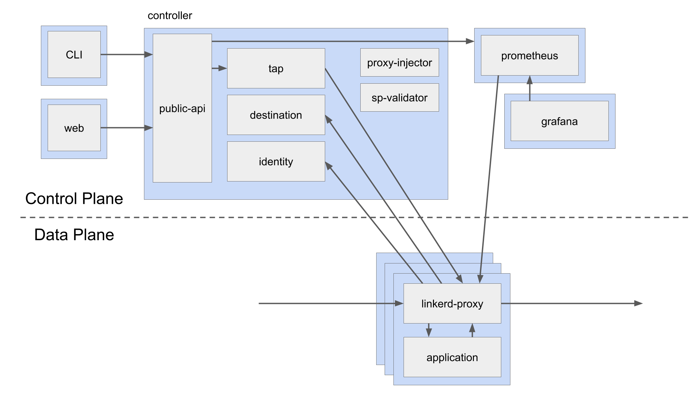

作者: 哗啦啦 mesh团队，热衷于kubernetes、devops、apollo、istio、linkerd、openstack、calico 等领域技术。
linkerd2介绍
Linkerd由控制平面和数据平面组成：
-
控制平面是在所属的Kubernetes命名空间（linkerd默认情况下）中运行的一组服务，这些服务可以完成汇聚遥测数据，提供面向用户的API，并向数据平面代理提供控制数据等，它们共同驱动数据平面。 -
数据平面用Rust编写的轻量级代理，该代理安装在服务的每个pod中，并成为数据平面的一部分，它接收Pod的所有接入流量，并通过initContainer配置iptables正确转发流量的拦截所有传出流量，因为它是附加工具，并且拦截服务的所有传入和传出流量，所以不需要更改代码，甚至可以将其添加到正在运行的服务中。
借用官方的图：

proxy由rust开发完成，其内部的异步运行时采用了Tokio框架，服务组件用到了tower。
本文主要关注proxy与destination组件交互相关的整体逻辑，分析proxy内部的运行逻辑。
流程分析
初始化
proxy启动后：
app::init初始化配置app::Main::new创建主逻辑main，main.run_until内新加一任务ProxyParts::build_proxy_task。
在ProxyParts::build_proxy_task中会进行一系列的初始化工作，此处只关注dst_svc，其创建代码为：
dst_svc = svc::stack(connect::svc(keepalive))
.push(tls::client::layer(local_identity.clone()))
.push_timeout(config.control_connect_timeout)
.push(control::client::layer())
.push(control::resolve::layer(dns_resolver.clone()))
.push(reconnect::layer({
let backoff = config.control_backoff.clone();
move |_| Ok(backoff.stream())
}))
.push(http_metrics::layer::<_, classify::Response>(
ctl_http_metrics.clone(),
))
.push(proxy::grpc::req_body_as_payload::layer().per_make())
.push(control::add_origin::layer())
.push_buffer_pending(
config.destination_buffer_capacity,
config.control_dispatch_timeout,
)
.into_inner()
.make(config.destination_addr.clone())
dst_svc一共有2处引用，一是crate::resolve::Resolver的创建会涉及；另一个就是ProfilesClient的创建。
Resolver
api_resolve::Resolve::new(dst_svc.clone())创建resolver对象- 调用
outbound::resolve创建map_endpoint::Resolve类型对象，并当做参数resolve传入outbound::spawn函数开启出口线程
在outbound::spawn中，resolve被用于创建负载均衡控制层，并用于后续路由控制：
let balancer_layer = svc::layers()
.push_spawn_ready()
.push(discover::Layer::new(
DISCOVER_UPDATE_BUFFER_CAPACITY,
resolve,
))
.push(balance::layer(EWMA_DEFAULT_RTT, EWMA_DECAY));
在discover::Layer::layer中：
let from_resolve = FromResolve::new(self.resolve.clone());
let make_discover = MakeEndpoint::new(make_endpoint, from_resolve);
Buffer::new(self.capacity, make_discover)
Profiles
- 在
ProfilesClient::new中调用api::client::Destination::new(dst_svc)创建grpc的client端并存于成员变量service - 接着
profiles_client对象会被用于inbound和outbound的创建（省略无关代码）：
let dst_stack = svc::stack(...)...
.push(profiles::router::layer(
profile_suffixes,
profiles_client,
dst_route_stack,
))
...
其中profiles::router::layer会创建一个Layer对象，并将profiles_client赋予get_routes成员。然后在service方法中，会调到Layer::layer方法，里面会创建一个MakeSvc对象，其get_routes成员的值即为profiles_client。
运行
新的连接过来时，从listen拿到连接对象后，会交给linkerd_proxy::transport::tls::accept::AcceptTls的call，然后是linkerd2_proxy::proxy::server::Server的call，并最终分别调用linkerd2_proxy_http::balance::MakeSvc::call和linkerd2_proxy_http::profiles::router::MakeSvc::call方法。
balance
在linkerd2_proxy_http::balance::MakeSvc::call中：
- 调用
inner.call(target)，此处的inner即是前面Buffer::new的结果。 - 生成一个新的
linkerd2_proxy_http::balance::MakeSvc对象，当做Future返回
先看inner.call。它内部经过层层调用，依次触发Buffer、MakeEndpoint、FromResolve等结构的call方法，最终会触发最开始创建的resolve.resolve(target)，其内部调用api_resolve::Resolve::call。
在api_resolve::Resolve::call中：
fn call(&mut self, target: T) -> Self::Future {
let path = target.to_string();
trace!("resolve {:?}", path);
self.service
// GRPC请求，获取k8s的endpoint
.get(grpc::Request::new(api::GetDestination {
path,
scheme: self.scheme.clone(),
context_token: self.context_token.clone(),
}))
.map(|rsp| {
debug!(metadata = ?rsp.metadata());
// 拿到结果stream
Resolution {
inner: rsp.into_inner(),
}
})
}
将返回的Resolution再次放入MakeSvc中，然后看其poll：
fn poll(&mut self) -> Poll<Self::Item, Self::Error> {
// 这个poll会依次调用:
// linkerd2_proxy_api_resolve::resolve::Resolution::poll
// linkerd2_proxy_discover::from_resolve::DiscoverFuture::poll
// linkerd2_proxy_discover::make_endpoint::DiscoverFuture::poll
// 最终获得Poll<Change<SocketAddr, Endpoint>>
let discover = try_ready!(self.inner.poll());
let instrument = PendingUntilFirstData::default();
let loaded = PeakEwmaDiscover::new(discover, self.default_rtt, self.decay, instrument);
let balance = Balance::new(loaded, self.rng.clone());
Ok(Async::Ready(balance))
}
最终返回service Balance。
当具体请求过来后，先会判断Balance::poll_ready：
fn poll_ready(&mut self) -> Poll<(), Self::Error> {
// 获取Update<Endpoint>
// 将Remove的从self.ready_services中删掉
// 将Insert的构造UnreadyService结构加到self.unready_services
self.poll_discover()?;
// 对UnreadyService，调用其poll，内部会调用到svc的poll_ready判断endpoint是否可用
// 可用时，将其加入self.ready_services
self.poll_unready();
loop {
if let Some(index) = self.next_ready_index {
// 找到对应的endpoint，可用则返回
if let Ok(Async::Ready(())) = self.poll_ready_index_or_evict(index) {
return Ok(Async::Ready(()));
}
}
// 选择负载比较低的endpoint
self.next_ready_index = self.p2c_next_ready_index();
if self.next_ready_index.is_none() {
//
return Ok(Async::NotReady);
}
}
}
就绪后，对请求req调用call：
fn call(&mut self, request: Req) -> Self::Future {
// 找到下一个可用的svc，并将其从ready_services中删除
let index = self.next_ready_index.take().expect("not ready");
let (key, mut svc) = self
.ready_services
.swap_remove_index(index)
.expect("invalid ready index");
// 将请求转过去
let fut = svc.call(request);
// 加到unready
self.push_unready(key, svc);
fut.map_err(Into::into)
}
profiles
在linkerd2_proxy_http::profiles::router::MakeSvc::call中：
// Initiate a stream to get route and dst_override updates for this
// destination.
let route_stream = match target.get_destination() {
Some(ref dst) => {
if self.suffixes.iter().any(|s| s.contains(dst.name())) {
debug!("fetching routes for {:?}", dst);
self.get_routes.get_routes(&dst)
} else {
debug!("skipping route discovery for dst={:?}", dst);
None
}
}
None => {
debug!("no destination for routes");
None
}
};
经过若干判断后，会调用ProfilesClient::get_routes并将结果存于route_stream。
进入get_routes：
fn get_routes(&self, dst: &NameAddr) -> Option<Self::Stream> {
// 创建通道
let (tx, rx) = mpsc::channel(1);
// This oneshot allows the daemon to be notified when the Self::Stream
// is dropped.
let (hangup_tx, hangup_rx) = oneshot::channel();
// 创建Daemon对象（Future任务）
let daemon = Daemon {
tx,
hangup: hangup_rx,
dst: format!("{}", dst),
state: State::Disconnected,
service: self.service.clone(),
backoff: self.backoff,
context_token: self.context_token.clone(),
};
// 调用Daemon::poll
let spawn = DefaultExecutor::current().spawn(Box::new(daemon.map_err(|_| ())));
// 将通道接收端传出
spawn.ok().map(|_| Rx {
rx,
_hangup: hangup_tx,
})
}
接着看Daemon::poll：
fn poll(&mut self) -> Poll<Self::Item, Self::Error> {
loop {
// 遍历state成员状态
self.state = match self.state {
// 未连接时
State::Disconnected => {
match self.service.poll_ready() {
Ok(Async::NotReady) => return Ok(Async::NotReady),
Ok(Async::Ready(())) => {}
Err(err) => {
error!(
"profile service unexpected error (dst = {}): {:?}",
self.dst, err,
);
return Ok(Async::Ready(()));
}
};
// 构造grpc请求
let req = api::GetDestination {
scheme: "k8s".to_owned(),
path: self.dst.clone(),
context_token: self.context_token.clone(),
};
debug!("getting profile: {:?}", req);
// 获取请求任务
let rspf = self.service.get_profile(grpc::Request::new(req));
State::Waiting(rspf)
}
// 正在请求时，从请求中获取回复
State::Waiting(ref mut f) => match f.poll() {
Ok(Async::NotReady) => return Ok(Async::NotReady),
// 正常回复
Ok(Async::Ready(rsp)) => {
trace!("response received");
// 流式回复
State::Streaming(rsp.into_inner())
}
Err(e) => {
warn!("error fetching profile for {}: {:?}", self.dst, e);
State::Backoff(Delay::new(clock::now() + self.backoff))
}
},
// 接收回复
State::Streaming(ref mut s) => {
// 处理回复流
// 注意此处，参数1是get_profile请求的回复流，
// 参数2是之前创建的通道发送端
match Self::proxy_stream(s, &mut self.tx, &mut self.hangup) {
Async::NotReady => return Ok(Async::NotReady),
Async::Ready(StreamState::SendLost) => return Ok(().into()),
Async::Ready(StreamState::RecvDone) => {
State::Backoff(Delay::new(clock::now() + self.backoff))
}
}
}
// 异常，结束请求
State::Backoff(ref mut f) => match f.poll() {
Ok(Async::NotReady) => return Ok(Async::NotReady),
Err(_) | Ok(Async::Ready(())) => State::Disconnected,
},
};
}
}
接着 proxy_stream：
fn proxy_stream(
rx: &mut grpc::Streaming<api::DestinationProfile, T::ResponseBody>,
tx: &mut mpsc::Sender<profiles::Routes>,
hangup: &mut oneshot::Receiver<Never>,
) -> Async<StreamState> {
loop {
// 发送端是否就绪
match tx.poll_ready() {
Ok(Async::NotReady) => return Async::NotReady,
Ok(Async::Ready(())) => {}
Err(_) => return StreamState::SendLost.into(),
}
// 从grpc stream中取得一条数据
match rx.poll() {
Ok(Async::NotReady) => match hangup.poll() {
Ok(Async::Ready(never)) => match never {}, // unreachable!
Ok(Async::NotReady) => {
// We are now scheduled to be notified if the hangup tx
// is dropped.
return Async::NotReady;
}
Err(_) => {
// Hangup tx has been dropped.
debug!("profile stream cancelled");
return StreamState::SendLost.into();
}
},
Ok(Async::Ready(None)) => return StreamState::RecvDone.into(),
// 正确取得profile结构
Ok(Async::Ready(Some(profile))) => {
debug!("profile received: {:?}", profile);
// 解析数据
let retry_budget = profile.retry_budget.and_then(convert_retry_budget);
let routes = profile
.routes
.into_iter()
.filter_map(move |orig| convert_route(orig, retry_budget.as_ref()))
.collect();
let dst_overrides = profile
.dst_overrides
.into_iter()
.filter_map(convert_dst_override)
.collect();
// 构造profiles::Routes结构并推到发送端
match tx.start_send(profiles::Routes {
routes,
dst_overrides,
}) {
Ok(AsyncSink::Ready) => {} // continue
Ok(AsyncSink::NotReady(_)) => {
info!("dropping profile update due to a full buffer");
// This must have been because another task stole
// our tx slot? It seems pretty unlikely, but possible?
return Async::NotReady;
}
Err(_) => {
return StreamState::SendLost.into();
}
}
}
Err(e) => {
warn!("profile stream failed: {:?}", e);
return StreamState::RecvDone.into();
}
}
}
}
回到MakeSvc::call方法，前面创建的route_stream会被用于创建一个linkerd2_proxy::proxy::http::profiles::router::Service任务对象，并在其poll_ready方法中通过poll_route_stream从route_steam获取profiles::Routes并调用update_routes创建具体可用的路由规则linkerd2_router::Router，至此，路由规则已建好，就等具体的请求过来然后在call中调用linkerd2_router::call进行对请求的路由判断。
图示
profile
总结
proxy采用的tower框架，每个处理逻辑都是其中的一个layer，开发时只需层层堆叠即可。不过，也正因如此，各层之间的接口都极其相似，须得小心不可调错。 对于destination这部分逻辑，linkerd2的destination组件收到来自proxy的grpc请求后，每当endpoint或service profile有任何变动，都会立即通过stream发送过去，proxy收到后根据endpoint调整负载均衡策略，根据service profile调整路由，然后通过它们来处理用户服务的实际请求。